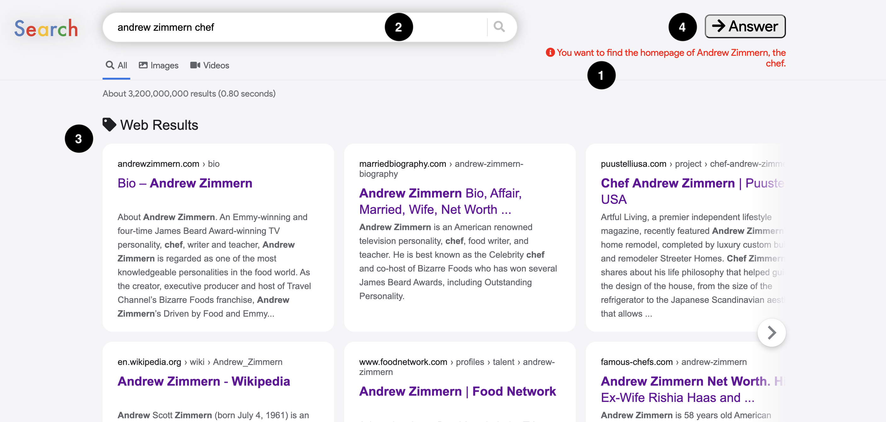

Welcome to the study!
- Your browser's resolution is good. Please keep your browser window at this resolution through the duration of the study. If you resize your browser during the study, we may have to cancel your participation. Please maximise your browser's window. Your browser's window is not big enough to run this study. If you have resized and you still see this message, try refreshing your browser. If you're running Windows and you still see this message, make sure your display scaling is set to 100% (Settings > System > Display > Scale and Layout).
- In this study, we will provide you with results page that look like this: 
- You will be asked to walk through 12 search scenarios, one after the other. Each will have its own information need.
- The information need will be present at the top right of the results page (marked 1 in the figure above).
- For each information need, other crowdworkers have provided us with the query that they would issue. You will see the query in the search box at the top of the page (marked 2 in the figure above).
- For this study, you won't be able to change the query.
- We will provide you with results (marked 3 in the figure above) from the web (documents, images, videos, etc.) as seen on a typical results page for each query.
- Your task is to go through the results and find the information pertaining to the given information need.
- You can open the results (click links) and take as long as you need to find the information. Results will open in a new tab.
- Once you have finished reading, close the tab to return to the results page we provide.
- Once you are satisfied that you have found enough information click the Answer (marked 4 in the figure above) button at the top of the results page.
- You will be taken to a new page where you type the answer for that particular scenario. Write a short answer (at most 50 words) based on the information you found on the results page.
- Answers that are not on topic or do not address the information need will be disqualified.
- Once you have written down the answer, click the Next Scenario button to go to the next search scenario.
- After you have gone through all 12 scenarios, we will take you to an exit survey to complete the study.
- We request you to only use the results we provide. You do not need to issue queries in a separate search engine.
- Please avoid the use of your browser's back button as you go through this experiment.
- When ready, type in your Prolific ID and click Submit to start the study!